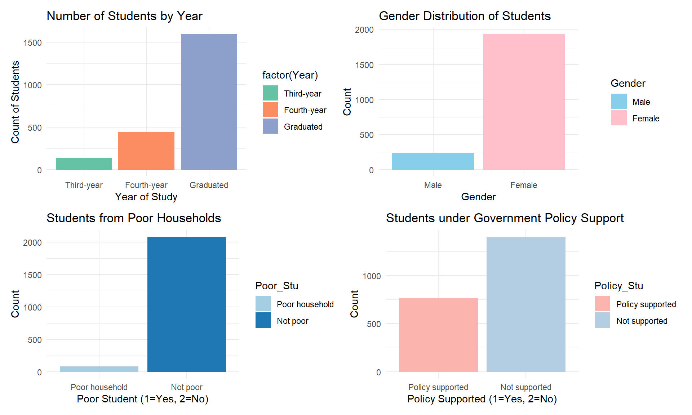
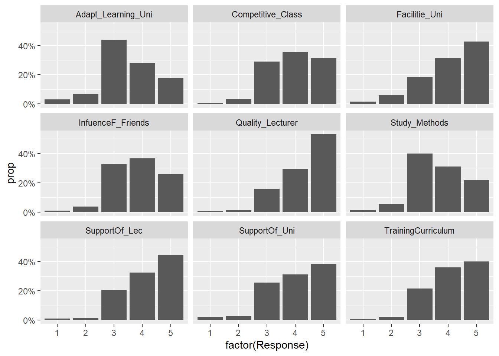
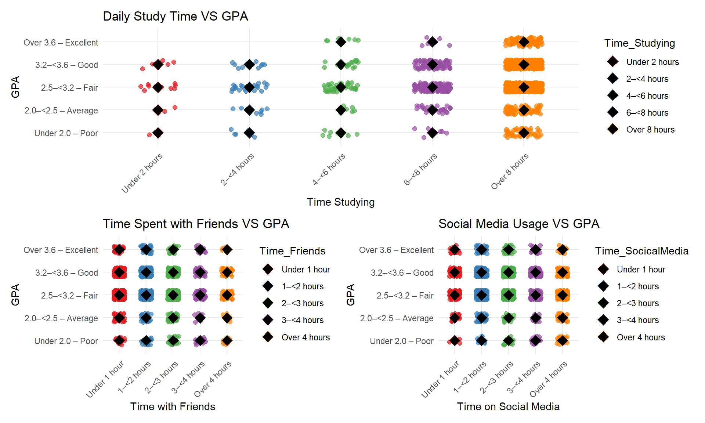
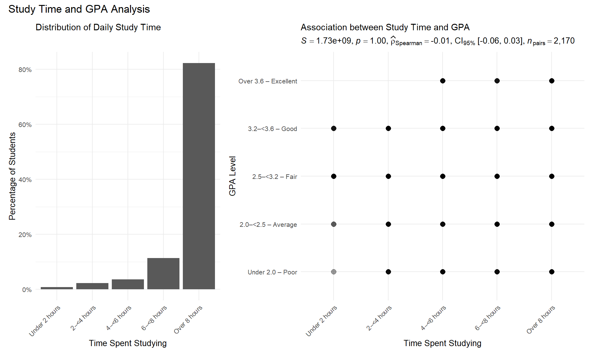
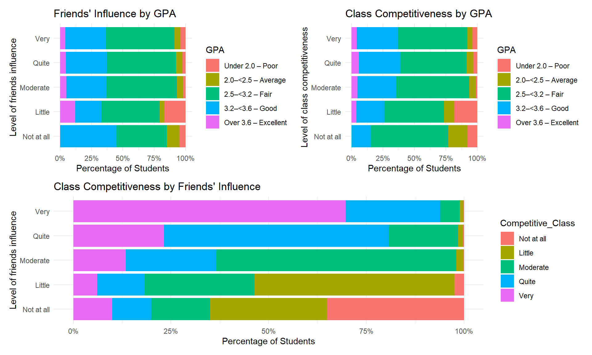
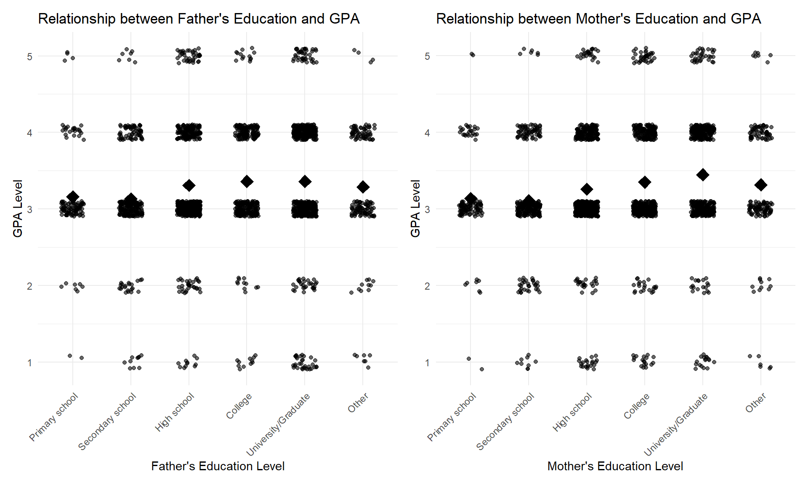
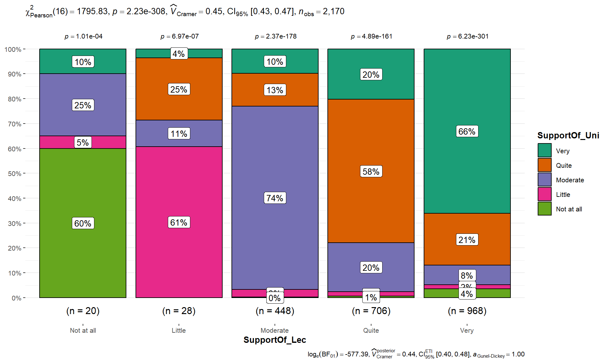

pacman::p_load(dplyr,tidyr,ggplot2,readxl,scales,ggstatsplot,patchwork)Take-home Exercise 1: Visual Analytics of Factors Influencing Student Academic Performance at a Vietnamese University
1. Overview
1.1 Background
This dataset is based on a survey of 2,170 students and alumni from the University of Education, Vietnam National University, Hanoi, conducted between March and May 2023. It includes information on students’ GPA, demographic characteristics, learning motivation, university support, lecturer support, facilities, training programs, and peer relationships.
Academic performance is influenced by both personal factors (such as motivation and learning adaptation) and external factors (such as teaching quality, institutional support, and family background). In the context of educational innovation in Vietnam, where learners are placed at the center of the learning process, understanding these influences is important for improving student outcomes.
Although the data is self-reported, it provides valuable insights into students’ learning experiences and their relationship with GPA, making it suitable for exploratory data analysis and visual analytics in educational research.
1.2 The data
The dataset consists of 2,170 responses from students and alumni of the University of Education, Vietnam National University, Hanoi, with 22 variables capturing demographic, social, and academic factors. The data was collected and reported in this study. Below are some key highlights:
Numerical Features include GPA and time-related variables such as average hours spent studying, using social media, and socializing with friends. These variables allow quantitative assessment of student behaviors and learning outcomes.
Categorical Features cover student demographics (year of study, gender, minority status, policy-supported students, economic background), parents’ education and occupation, and perceptions of university and lecturer support, curriculum suitability, class competition, and peer influence. These variables provide insights into factors that may influence academic performance and motivation.
Overall, the dataset offers a comprehensive view of student characteristics, behaviors, and support systems, making it suitable for exploring relationships between various internal and external factors and learning outcomes.
1.3 The task
Using the 2023 Student Questionnaire Dataset from the University of Education, Vietnam National University, Hanoi, this post aims to use appropriate Exploratory Data Analysis (EDA) methods and ggplot2 functions to uncover:
The distribution of students’ learning outcomes, measured by GPA, and
The relationship between GPA and students’ demographic, personal, and external factors, including year of study, gender, family background, time spent studying, adaptation to university, learning methods, university support, lecturer support, classroom competition, and peer influence.
The goal is to identify key factors that influence student performance and provide meaningful insights for educational research and intervention planning.
2. Getting start
2.1 Loading packages
We load the following R packages using the pacman::p_load() function:
| Library | Description |
|---|---|
| tidyverse | Core packages for data wrangling, filtering, summarizing, and plotting |
| readxl | Read Excel .xlsx files |
| ggplot2 | Provides a flexible framework for creating data visualization such as bar charts, jitter plots, stacked bar charts, and summary plots |
| dplyr | Data manipulation and transformation |
| tidyr | Reshape the dataset into tidy format |
| scales | Format axis labels for readability and interpretability of proportion-based visualizations |
| ggstatsplot | Display graphical relationships along with statistical test results |
| patchwork | Combine multiple ggplot2 plots into one figure |
The code chunk below will be used load these R packages into RStudio environment
2.2 Data import
In the code chunk below, read_xlsx() of readr package is used to import Database paper.xlsx into R and saved it into a tibble data.frame.
student_data <- read_xlsx("data/Database paper.xlsx")3. Data wrangling
3.1 Variables selection
For this post, only the columns relevant to our planned visualizations were retained. The dataset’s accompanying Codebook was particularly helpful in understanding the meaning of each variable, their coding system, and the types of responses collected.
The retained variables can be grouped into four broad categories, capturing aspects of University Support, Gender/Personal Demographics, Socio-economic Status, and Student Behavior/Performance. Details are extracted from the Codebook:
| Variable name | Question | Encoding scheme |
|---|---|---|
| Year | What year student are you in? | 1 - First-year 2 - Second-year 3 - Third-year 4 - Fourth-year 5 - Graduated |
| Gender | What is your gender? | 1 - Male 2 - Female |
| Policy_Stu | Are you a student on policy government support? | 1 - Yes 2 - No |
| Poor_Stu | Is your family a poor household? | 1 - Yes 2 - No |
| Father_Edu | What educational background of your father? | 1 - Primary school 2 - Secondary school 3 - High school 4 - College school 5 - University/graduate education 6 - Other |
| Mother_Edu | What educational background of your mother? | 1 - Primary school 2 - Secondary school 3 - High school 4 - College school 5 - University/graduate education 6 - Other |
| Time_Friends | How much time do you spend hanging out with your friends on average per day? | 1 - under 1 hours 2 - from 1 to lower 2 hours 3 - from 2 to lower 3 hours 4 - from 3 to lower 4 hours 5 - over 4 hour |
| Time_SocicalMedia | How much time do you spend using social media on average per day? | 1 - under 1 hours 2 - from 1 to lower 2 hours 3 - from 2 to lower 3 hours 4 - from 3 to lower 4 hours 5 - over 4 hour |
| Time_Studying | How much time do you spend studying on average per day? | 1 - under 2 hours 2 - from 2 to lower 4 hours 3 - from 4 to lower 6 hours 4 - from 6 to lower 8 hours 5 - over 8 hour |
| GPA | What is your cumulative grade point average (GPA)? | 1 - Under 2.0 – Poor 2 - From 2.0 to lower 2.5 – Average 3 - From 2.5 to lower 3.2 – Fair 4 - From 3.2 to lower 3.6 – Good 5 - Over 3.6 – Excellent |
| Adapt_Learning_Uni | How level are you adapting to the learning environment at the university? | 1 - Not at all 2 - Little 3 - Moderate 4 - Quite 5 - Very |
| Study_Methods | How level are your studying methods affecting your outcomes? | 1 - Not at all 2 - Little 3 - Moderate 4 - Quite 5 - Very |
| SupportOf_Uni | How level is the university’s support for you? | 1 - Not at all 2 - Little 3 - Moderate 4 - Quite 5 - Very |
| SupportOf_Lec | How level is the lecturer’s support (affecting your outcomes)? | 1 - Not at all 2 - Little 3 - Moderate 4 - Quite 5 - Very |
| Facilitie_Uni | How responsive are the university facilities? | 1 - Not at all 2 - Little 3 - Moderate 4 - Quite 5 - Very |
| TrainingCurriculum | How level is suitable of the university curriculum? | 1 - Not at all 2 - Little 3 - Moderate 4 - Quite 5 - Very |
| Competitive_Class | How level is the competing class affecting you? | 1 - Not at all 2 - Little 3 - Moderate 4 - Quite 5 - Very |
| InfuenceF_Friends | How the level are friends in class affecting your outcomes? | 1 - Not at all 2 - Little 3 - Moderate 4 - Quite 5 - Very |
glimpse() of the dplyr package allows us to see all columns and their data type in the data frame.
glimpse(student_data)Rows: 2,170
Columns: 22
$ Year <dbl> 5, 5, 5, 5, 5, 5, 5, 5, 5, 5, 5, 5, 5, 5, 5, 5, 5, …
$ Gender <dbl> 2, 1, 2, 2, 1, 2, 2, 2, 2, 2, 1, 2, 2, 2, 2, 2, 2, …
$ Policy_Stu <dbl> 2, 2, 2, 2, 1, 2, 2, 2, 2, 2, 2, 2, 2, 1, 2, 2, 2, …
$ Minority_Stu <dbl> 2, 2, 2, 2, 2, 2, 2, 2, 2, 2, 2, 2, 2, 2, 2, 2, 2, …
$ Poor_Stu <dbl> 2, 2, 2, 2, 2, 2, 2, 2, 2, 2, 2, 2, 2, 2, 2, 2, 2, …
$ Father_Edu <dbl> 4, 3, 4, 5, 2, 5, 6, 5, 5, 5, 3, 3, 3, 3, 3, 4, 5, …
$ Mother_Edu <dbl> 4, 3, 4, 4, 3, 5, 5, 4, 5, 4, 3, 3, 3, 4, 3, 4, 5, …
$ Father_Occupation <dbl> 2, 2, 1, 1, 3, 1, 1, 5, 1, 3, 3, 3, 3, 3, 2, 2, 4, …
$ Mother_Occupation <dbl> 3, 4, 2, 1, 3, 2, 4, 3, 1, 3, 3, 3, 3, 3, 2, 2, 4, …
$ Time_Friends <dbl> 2, 1, 1, 2, 1, 1, 2, 2, 1, 3, 2, 2, 2, 2, 2, 1, 3, …
$ Time_SocicalMedia <dbl> 2, 3, 2, 2, 2, 3, 2, 2, 2, 2, 2, 1, 2, 2, 2, 3, 4, …
$ Time_Studying <dbl> 5, 5, 5, 5, 1, 2, 5, 5, 5, 5, 5, 5, 5, 1, 5, 5, 5, …
$ GPA <dbl> 4, 3, 4, 4, 4, 4, 3, 5, 5, 3, 3, 4, 4, 3, 5, 4, 4, …
$ Adapt_Learning_Uni <dbl> 4, 3, 4, 4, 5, 4, 4, 4, 4, 3, 4, 4, 4, 5, 4, 4, 5, …
$ Study_Methods <dbl> 4, 3, 4, 4, 5, 4, 4, 4, 4, 4, 4, 4, 4, 5, 4, 3, 5, …
$ SupportOf_Uni <dbl> 3, 3, 4, 5, 5, 5, 5, 5, 4, 5, 4, 4, 4, 5, 4, 4, 5, …
$ SupportOf_Lec <dbl> 4, 4, 4, 5, 5, 4, 5, 4, 4, 5, 4, 4, 4, 5, 4, 4, 5, …
$ Facilitie_Uni <dbl> 4, 4, 3, 5, 5, 5, 5, 4, 4, 5, 4, 4, 4, 5, 4, 3, 5, …
$ Quality_Lecturer <dbl> 4, 3, 4, 5, 5, 5, 4, 5, 5, 5, 4, 4, 4, 5, 4, 4, 5, …
$ TrainingCurriculum <dbl> 4, 3, 4, 4, 5, 4, 5, 4, 4, 5, 4, 4, 4, 5, 4, 3, 5, …
$ Competitive_Class <dbl> 3, 3, 4, 4, 4, 3, 4, 3, 4, 4, 4, 4, 4, 5, 4, 4, 5, …
$ InfuenceF_Friends <dbl> 3, 4, 4, 4, 5, 3, 5, 4, 4, 4, 4, 4, 4, 5, 4, 5, 4, …A new dataset, student_viz_data, was generated by selecting only the variables relevant to the planned visualizations.
selected_vars <- c(
"Year", "Gender", "Poor_Stu", "Policy_Stu", "Father_Edu", "Mother_Edu",
"Time_Friends", "Time_SocicalMedia", "Time_Studying",
"GPA", "Adapt_Learning_Uni", "Study_Methods", "Quality_Lecturer",
"SupportOf_Uni", "SupportOf_Lec", "Facilitie_Uni", "TrainingCurriculum","Competitive_Class", "InfuenceF_Friends"
)
student_viz_data <- student_data %>%
select(all_of(selected_vars))
head(student_viz_data)# A tibble: 6 × 19
Year Gender Poor_Stu Policy_Stu Father_Edu Mother_Edu Time_Friends
<dbl> <dbl> <dbl> <dbl> <dbl> <dbl> <dbl>
1 5 2 2 2 4 4 2
2 5 1 2 2 3 3 1
3 5 2 2 2 4 4 1
4 5 2 2 2 5 4 2
5 5 1 2 1 2 3 1
6 5 2 2 2 5 5 1
# ℹ 12 more variables: Time_SocicalMedia <dbl>, Time_Studying <dbl>, GPA <dbl>,
# Adapt_Learning_Uni <dbl>, Study_Methods <dbl>, Quality_Lecturer <dbl>,
# SupportOf_Uni <dbl>, SupportOf_Lec <dbl>, Facilitie_Uni <dbl>,
# TrainingCurriculum <dbl>, Competitive_Class <dbl>, InfuenceF_Friends <dbl>3.2 Handling missing value
To examine missing values for each variable individually, the code chunk below was used to compute the number of missing observations by column.
colSums(is.na(student_viz_data)) Year Gender Poor_Stu Policy_Stu
0 0 0 0
Father_Edu Mother_Edu Time_Friends Time_SocicalMedia
0 0 0 0
Time_Studying GPA Adapt_Learning_Uni Study_Methods
0 0 0 0
Quality_Lecturer SupportOf_Uni SupportOf_Lec Facilitie_Uni
0 0 0 0
TrainingCurriculum Competitive_Class InfuenceF_Friends
0 0 0 After inspecting the dataset using colSums(is.na(student_data)), no missing values were detected across all variables. This indicates that the dataset is complete and does not require further treatment such as row deletion, variable removal, or imputation. Therefore, all observations were retained for subsequent data preparation, analysis, and visualization.
3.3 Recoding categorical variables
Although many variables in the dataset are recorded using numerical codes (e.g., 1–5), these values do not represent actual quantities or measurements but instead correspond to ordered categories or levels of perception. If left as numeric variables, R would treat them as continuous numbers, implying equal intervals between categories and allowing inappropriate mathematical operations such as averaging or regression as if they were true numerical measurements. This can lead to misleading results and incorrect visual interpretations. Therefore, these variables need to be recoded as ordered factors with meaningful labels to ensure accurate and appropriate analysis and visualization by using the code chunk below.
student_viz_data <- student_viz_data |>
mutate(
Year = factor(Year,
levels = c(1,2,3,4,5),
labels = c("First-year",
"Second-year",
"Third-year",
"Fourth-year",
"Graduated")),
Gender = factor(Gender,
levels = c(1,2),
labels = c("Male", "Female")),
Poor_Stu = factor(Poor_Stu,
levels = c(1,2),
labels = c("Poor household", "Not poor")),
Policy_Stu = factor(Policy_Stu,
levels = c(1,2),
labels = c("Policy supported", "Not supported")),
Father_Edu = factor(Father_Edu,
levels = 1:6,
labels = c("Primary school",
"Secondary school",
"High school",
"College",
"University/Graduate",
"Other")),
Mother_Edu = factor(Mother_Edu,
levels = 1:6,
labels = c("Primary school",
"Secondary school",
"High school",
"College",
"University/Graduate",
"Other")),
Time_Friends = factor(Time_Friends,
levels = c(1,2,3,4,5),
labels = c("Under 1 hour",
"1–<2 hours",
"2–<3 hours",
"3–<4 hours",
"Over 4 hours")),
Time_SocicalMedia = factor(Time_SocicalMedia,
levels = c(1,2,3,4,5),
labels = c("Under 1 hour",
"1–<2 hours",
"2–<3 hours",
"3–<4 hours",
"Over 4 hours")),
Time_Studying = factor(Time_Studying,
levels = c(1,2,3,4,5),
labels = c("Under 2 hours",
"2–<4 hours",
"4–<6 hours",
"6–<8 hours",
"Over 8 hours")),
GPA = factor(GPA,
levels = c(1,2,3,4,5),
labels = c("Under 2.0 – Poor",
"2.0–<2.5 – Average",
"2.5–<3.2 – Fair",
"3.2–<3.6 – Good",
"Over 3.6 – Excellent")),
Adapt_Learning_Uni = factor(Adapt_Learning_Uni,
levels = 1:5,
labels = c("Not at all",
"Little",
"Moderate",
"Quite",
"Very")),
Study_Methods = factor(Study_Methods,
levels = 1:5,
labels = c("Not at all",
"Little",
"Moderate",
"Quite",
"Very")),
SupportOf_Uni = factor(SupportOf_Uni,
levels = 1:5,
labels = c("Not at all",
"Little",
"Moderate",
"Quite",
"Very")),
SupportOf_Lec = factor(SupportOf_Lec,
levels = 1:5,
labels = c("Not at all",
"Little",
"Moderate",
"Quite",
"Very")),
Facilitie_Uni = factor(Facilitie_Uni,
levels = 1:5,
labels = c("Not at all",
"Little",
"Moderate",
"Quite",
"Very")),
Quality_Lecturer = factor(Quality_Lecturer,
levels = 1:5,
labels = c("Not at all",
"Little",
"Moderate",
"Quite",
"Very")),
TrainingCurriculum = factor(TrainingCurriculum,
levels = 1:5,
labels = c("Not at all",
"Little",
"Moderate",
"Quite",
"Very")),
Competitive_Class = factor(Competitive_Class,
levels = 1:5,
labels = c("Not at all",
"Little",
"Moderate",
"Quite",
"Very")),
InfuenceF_Friends = factor(InfuenceF_Friends,
levels = 1:5,
labels = c("Not at all",
"Little",
"Moderate",
"Quite",
"Very"))
)After converting the selected variables to factors, we used glimpse() to quickly inspect the structure of the dataset and confirm that all categorical variables were correctly recoded.
glimpse(student_viz_data)Rows: 2,170
Columns: 19
$ Year <fct> Graduated, Graduated, Graduated, Graduated, Graduat…
$ Gender <fct> Female, Male, Female, Female, Male, Female, Female,…
$ Poor_Stu <fct> Not poor, Not poor, Not poor, Not poor, Not poor, N…
$ Policy_Stu <fct> Not supported, Not supported, Not supported, Not su…
$ Father_Edu <fct> College, High school, College, University/Graduate,…
$ Mother_Edu <fct> College, High school, College, College, High school…
$ Time_Friends <fct> 1–<2 hours, Under 1 hour, Under 1 hour, 1–<2 hours,…
$ Time_SocicalMedia <fct> 1–<2 hours, 2–<3 hours, 1–<2 hours, 1–<2 hours, 1–<…
$ Time_Studying <fct> Over 8 hours, Over 8 hours, Over 8 hours, Over 8 ho…
$ GPA <fct> 3.2–<3.6 – Good, 2.5–<3.2 – Fair, 3.2–<3.6 – Good, …
$ Adapt_Learning_Uni <fct> Quite, Moderate, Quite, Quite, Very, Quite, Quite, …
$ Study_Methods <fct> Quite, Moderate, Quite, Quite, Very, Quite, Quite, …
$ Quality_Lecturer <fct> Quite, Moderate, Quite, Very, Very, Very, Quite, Ve…
$ SupportOf_Uni <fct> Moderate, Moderate, Quite, Very, Very, Very, Very, …
$ SupportOf_Lec <fct> Quite, Quite, Quite, Very, Very, Quite, Very, Quite…
$ Facilitie_Uni <fct> Quite, Quite, Moderate, Very, Very, Very, Very, Qui…
$ TrainingCurriculum <fct> Quite, Moderate, Quite, Quite, Very, Quite, Very, Q…
$ Competitive_Class <fct> Moderate, Moderate, Quite, Quite, Quite, Moderate, …
$ InfuenceF_Friends <fct> Moderate, Quite, Quite, Quite, Very, Moderate, Very…4. Exploratory Data Analysis
Insight 1: Student Demographic
Descriptive bar charts were created using ggplot2 to summarize the likert-scale responses including demographic profile of students in Part A and university life in Part B.
Each demographic variable was visualized separately using count-based bar charts and arranged in a combined layout for comparison.
Likert-scale responses were transformed into long format using pivot_longer to facilitate visualization across multiple questions. Proportional bar charts were then generated using ggplot2, with each question displayed in a separate facet and response percentages shown on the y-axis.
Code
Stu_num <- ggplot(student_viz_data, aes(x = factor(Year), fill = factor(Year))) +
geom_bar() +
labs(title = "Number of Students by Year",
x = "Year of Study",
y = "Count of Students") +
theme_minimal() +
scale_fill_brewer(palette = "Set2")
Stu_sex <- ggplot(student_viz_data, aes(x = Gender, fill = Gender)) +
geom_bar() +
labs(title = "Gender Distribution of Students",
x = "Gender",
y = "Count") +
theme_minimal() +
scale_fill_manual(values = c("skyblue", "pink"))
Stu_poor <- ggplot(student_viz_data, aes(x = Poor_Stu, fill = Poor_Stu)) +
geom_bar() +
labs(title = "Students from Poor Households",
x = "Poor Student (1=Yes, 2=No)",
y = "Count") +
theme_minimal() +
scale_fill_brewer(palette = "Paired")
Stu_gov <- ggplot(student_viz_data, aes(x = Policy_Stu, fill = Policy_Stu)) +
geom_bar() +
labs(title = "Students under Government Policy Support",
x = "Policy Supported (1=Yes, 2=No)",
y = "Count") +
theme_minimal() +
scale_fill_brewer(palette = "Pastel1")
(Stu_num + Stu_sex)/(Stu_poor+Stu_gov)
Code
likert_data <- student_data %>%
select(
Adapt_Learning_Uni, Study_Methods, SupportOf_Uni,
SupportOf_Lec, Facilitie_Uni, Quality_Lecturer,
TrainingCurriculum, Competitive_Class, InfuenceF_Friends
) %>%
pivot_longer(cols = everything(),
names_to = "Question",
values_to = "Response")
ggplot(likert_data, aes(x = factor(Response))) +
geom_bar(aes(y = after_stat(prop), group = 1)) +
facet_wrap(~ Question) +
scale_y_continuous(labels = scales::percent)
TipInsight
Overall, the visualizations suggest that:
The student population is mainly composed of graduated students, with fewer third and fourth-year students.
The majority of respondents are female.
Most students do not come from poor households
More students are not receiving government policy support than those who are.
Students tend to report moderately positive perceptions of their university experience. Most students rated Adapt_Learning_Uni, SupportOf_Uni, and Quality_Lecturer positively (responses 3–5 dominate).
Competitive_Class and Facilities show more mixed opinions, indicating potential areas for improvement.
Influence from friends is generally perceived as moderate to high, suggesting peer relationships play an important role in academic life.
Insight 2: Student Time Allocation Impact on GPA
In university life, the amount of time students spend on various activities may be related to their GPA. Three separate visualizations were created using jittered scatter plots in ggplot2 to explore these relationships.
Time spent studying vs. GPA
Time spent with friends vs. GPA
Time spent on social media vs. GPA
In each plot, GPA was treated as the dependent variable (y-axis), while the respective time variable (categorical hours groups) was used as the independent variable (x-axis).
A jittered scatter plot (geom_jitter) was applied to reduce overplotting and allow individual data points to be visible, especially where many students shared the same GPA category and time group. This helps reveal the distribution of students within each time category rather than just showing aggregated values.
Code
Stu_study <- ggplot(student_viz_data, aes(x = Time_Studying, y = GPA, color = Time_Studying)) +
geom_jitter(width = 0.2, height = 0.2, size = 2, alpha = 0.7) +
stat_summary(fun = mean, geom = "point", shape = 23, size = 4, fill = "black") +
labs(
title = "Daily Study Time VS GPA",
x = "Time Studying",
y = "GPA"
) +
theme_minimal() +
scale_color_brewer(palette = "Set1")+
theme(
axis.text.x = element_text(angle = 45, hjust = 1)
)
Stu_friend <- ggplot(student_viz_data, aes(x = Time_Friends, y = GPA, color = Time_Friends)) +
geom_jitter(width = 0.2, height = 0.2, size = 2, alpha = 0.7) +
stat_summary(fun = mean, geom = "point", shape = 23, size = 4, fill = "black") +
labs(
title = "Time Spent with Friends VS GPA",
x = "Time with Friends",
y = "GPA"
) +
theme_minimal() +
scale_color_brewer(palette = "Set1")+
theme(
axis.text.x = element_text(angle = 45, hjust = 1)
)
Stu_social <- ggplot(student_viz_data, aes(x = Time_SocicalMedia, y = GPA, color = Time_SocicalMedia)) +
geom_jitter(width = 0.2, height = 0.2, size = 2, alpha = 0.7) +
stat_summary(fun = mean, geom = "point", shape = 23, size = 4, fill = "black") +
labs(
title = "Social Media Usage VS GPA",
x = "Time on Social Media",
y = "GPA"
) +
theme_minimal() +
scale_color_brewer(palette = "Set1")+
theme(
axis.text.x = element_text(angle = 45, hjust = 1)
)
(Stu_study)/(Stu_friend+Stu_social)
TipInsight
Overall, the three visualizations suggest that:
- Students’ behaviors (study, socializing, social media) show different impacts on GPA.
- Study time is most positively correlated with GPA.
- Time with friends shows little clear relationship with GPA.
- Social media time shows a mild negative relationship with GPA.
This indicates that how students allocate their time matters, with academic-focused activities (studying) being more strongly associated with better performance than leisure activities.
Insight 3: Student Study Time vs Performance
From Insight 2, Study time is most positively correlated with GPA. To examine whether study time is associated with GPA, two complementary visual approaches were used:
A descriptive visualization
An inferential visualization.
First, a descriptive bar chart was created using ggplot2 from the tidyverse to show the distribution of students across five study-time categories. The code used geom_bar() with after_stat(prop) to display percentages rather than raw counts, allowing comparison of how common each study-time category was among respondents. The variable Time_Studying was treated as a factor.
Second, an inferential visualization was produced using the ggscatterstats() function from the ggstatsplot package. Because both Study Time and GPA are measured on Likert scales, a non-parametric Spearman rank correlation (type = "np") was applied rather than a Pearson correlation. Marginal histograms were removed (marginal = FALSE) since the variables are discrete categories rather than continuous measures. This plot visually displays the relationship between study time and GPA while embedding the Spearman correlation coefficient and p-value directly in the graph.
Code
library(ggstatsplot)
p1 <- ggplot(student_viz_data, aes(x = factor(Time_Studying))) +
geom_bar(aes(y = after_stat(prop), group = 1)) +
scale_y_continuous(labels = scales::percent) +
labs(
title = "Distribution of Daily Study Time",
x = "Time Spent Studying",
y = "Percentage of Students"
) +
theme_minimal(base_size = 10)+
theme(
axis.text.x = element_text(angle = 45, hjust = 1),
plot.title = element_text(size = 11)
)
p2 <- ggscatterstats(
data = student_viz_data,
x = Time_Studying,
y = GPA,
type = "np",
marginal = FALSE,
title = "Association between Study Time and GPA",
xlab = "Time Spent Studying",
ylab = "GPA Level"
) +
theme_minimal(base_size = 10) + # cleaner text
theme(
axis.text.x = element_text(angle = 45, hjust = 1),
plot.title = element_text(size = 11)
)
(p1 | p2) +
plot_layout(widths = c(1.5, 2.3)) +
plot_annotation(
title = "Study Time and GPA Analysis"
)
TipInsight
The descriptive bar chart shows that the majority of students reported studying in the highest category (“over 8 hours”), indicating that most respondents are relatively intensive study. Very few students reported studying less than 2 hours per day.
However, the inferential scatter plot with Spearman correlation suggests that increased study time does not show a strong or meaningful association with GPA in this sample (ρ ≈ 0, p ≈ 1.00). This indicates that although many students study for long hours, longer study time alone does not necessarily translate into higher GPA.
Together, these two plots suggest that academic performance is likely influenced by factors beyond study duration alone, such as study methods, lecturer quality, university support, or peer influence.
Insight 4: Relationship of Class Competitiveness by Friends’ Influence
Students’ friends may affect class competitiveness. A diverging stacked bar chart was used to compare the distribution of classroom competitiveness (Competitive_Class) between students who reported positive friends’ influence and those who did not. Percentages were calculated within each group to allow fair comparison.
To analyze the relationship between friends’ influence, class competitiveness, and GPA, three percentage-based stacked bar charts were created. The data were first summarized using dplyr, specifically count(), group_by(), and mutate() to compute within-group percentages for
Friends’ influence vs class competitiveness
Friends’ influence vs GPA
Class competitiveness vs GPA.
The data were then visualized using ggplot2, where horizontal stacked bar charts were constructed with geom_col(position = position_stack()), placing percentages on the x-axis and categorical variables on the y-axis. Additional formatting such as scale_x_continuous(labels = scales::percent_format()) and theme_minimal() was applied to improve readability and comparability across plots. Finally, the three charts were arranged together using the patchwork syntax to enable a holistic comparison of how peer influence and perceived class competitiveness relate to academic performance.
Code
div_data <- student_viz_data |>
count(InfuenceF_Friends, Competitive_Class) |>
group_by(InfuenceF_Friends) |>
mutate(perc = n / sum(n) * 100) |>
ungroup()
div_data1 <- student_viz_data |>
count(InfuenceF_Friends, GPA) |>
group_by(InfuenceF_Friends) |>
mutate(perc = n / sum(n) * 100) |>
ungroup()
div_data2 <- student_viz_data |>
count(Competitive_Class, GPA) |>
group_by(Competitive_Class) |>
mutate(perc = n / sum(n) * 100) |>
ungroup()
Stu_influ_compet <- ggplot(div_data,
aes(x = perc,
y = InfuenceF_Friends,
fill = Competitive_Class)) +
geom_col(position = position_stack(vjust = 0.5)) +
scale_x_continuous(labels = scales::percent_format(scale = 1)) +
labs(
title = "Class Competitiveness by Friends' Influence",
x = "Percentage of Students",
y = "Level of friends influence"
) +
theme_minimal() +
theme(legend.position = "right")
Stu_influ <- ggplot(div_data1,
aes(x = perc,
y = InfuenceF_Friends,
fill = GPA)) +
geom_col(position = position_stack(vjust = 0.5)) +
scale_x_continuous(labels = scales::percent_format(scale = 1)) +
labs(
title = "Friends' Influence by GPA",
x = "Percentage of Students",
y = "Level of friends influence"
) +
theme_minimal() +
theme(legend.position = "right")
Stu_compet <- ggplot(div_data2,
aes(x = perc,
y = Competitive_Class,
fill = GPA)) +
geom_col(position = position_stack(vjust = 0.5)) +
scale_x_continuous(labels = scales::percent_format(scale = 1)) +
labs(
title = "Class Competitiveness by GPA",
x = "Percentage of Students",
y = "Level of class competitiveness"
) +
theme_minimal() +
theme(legend.position = "right")
((Stu_influ|Stu_compet)/Stu_influ_compet)
TipInsight
The visualization shows that students who perceive positive influence from friends are more likely to report being in highly competitive classes compared to those who do not. Conversely, students who do not feel positively influenced by friends tend to have a higher proportion of low or moderate class competitiveness. This suggests that peer influence and perceived academic environment are related and may jointly shape students’ learning experience.
Insight 5: Family background Equity & opportunity
Students from different family backgrounds may experience varying impacts on their GPA, two separate visualizations were created:
Father’s Education in relation to GPA.
Mother’s Education in relation to GPA.
First, the relevant variables (GPA, Father_Edu, and Mother_Edu) were selected from the dataset and reshaped into a long format using pivot_longer(). This step structured the data so that parental education levels could be analyzed in a consistent way if needed for further extensions or comparisons.
Then, two separate scatter-based plots were generated using ggplot2:
The x-axis represents the parent’s education level (treated as an ordered factor).
The y-axis represents GPA (numeric).
geom_jitter()was used to spread overlapping points, making the distribution of students within each education category more visible.
The two plots were then displayed side by side to allow direct visual comparison between father’s and mother’s education levels and their association with student GPA.
Code
parent_gpa_long <- student_viz_data |>
select(GPA, Father_Edu, Mother_Edu) |>
pivot_longer(
cols = c(Father_Edu, Mother_Edu),
names_to = "Parent",
values_to = "Education"
)
Stu_father <- ggplot(student_viz_data,
aes(x = factor(Father_Edu, ordered = TRUE),
y = as.numeric(GPA))) +
geom_jitter(width = 0.2, height = 0.1, alpha = 0.6) +
stat_summary(fun = mean, geom = "point",
shape = 23, size = 4, fill = "black") +
labs(
title = "Relationship between Father's Education and GPA",
x = "Father's Education Level",
y = "GPA Level"
) +
theme_minimal()+
theme(
axis.text.x = element_text(angle = 45, hjust = 1)
)
Stu_mother <- ggplot(student_viz_data,
aes(x = factor(Mother_Edu, ordered = TRUE),
y = as.numeric(GPA))) +
geom_jitter(width = 0.2, height = 0.1, alpha = 0.6) +
stat_summary(fun = mean, geom = "point",
shape = 23, size = 4, fill = "black") +
labs(
title = "Relationship between Mother's Education and GPA",
x = "Mother's Education Level",
y = "GPA Level"
) +
theme_minimal()+
theme(
axis.text.x = element_text(angle = 45, hjust = 1)
)
Stu_father+Stu_mother
TipInsight
The scatter plots show that students’ GPA is distributed across all levels of parents’ education, indicating that academic performance is not exclusively determined by family educational background. Students whose parents have only primary or secondary education can still achieve high GPAs comparable to those whose parents are university graduates. However, there is a students whose parents have higher education levels tend to cluster more around higher GPA levels, suggesting that family educational background may provide some academic advantage, but it does not strictly limit or determine student success.
Insight 6: University support
University support may influence how students perceive lecturer support, and this relationship can help explain differences in student experiences. A stacked bar chart with embedded inferential statistics was produced using the ggbarstats() function from the ggstatsplot package.
The stacked bar chart provides a descriptive visualization of how responses to lecturer support are distributed within each level of university support. Percentages within each bar were displayed to allow easy comparison across categories rather than relying on raw counts alone.
To complement the descriptive visualization, an inferential test of association was automatically performed by ggbarstats(). Because both variables are categorical Likert-scale responses, a Pearson Chi-square test of independence was used to assess whether the two variables are statistically associated. In addition, Cramér’s V was reported as a measure of effect size to indicate the strength of the relationship.
Code
library(ggstatsplot)
ggbarstats(
data = student_viz_data,
x = SupportOf_Uni,
y = SupportOf_Lec
)
TipInsight
The visualization and statistical test suggest that:
Pearson χ² = 1795.83, p < 0.001 → the relationship is statistically significant.
Cramér’s V ≈ 0.45 → this represents a moderate to strong association between university support and lecturer support.
The stacked bar chart and Pearson Chi-square test show a strong and significant association between perceived university support and lecturer support. Students who feel highly supported by the university are also much more likely to perceive strong support from their lecturers, indicating that institutional and instructional support are closely interconnected in shaping student experience.
5. Summary
The study examined factors influencing student experiences and academic performance, focusing on student background, time allocation, peer influence, family background, and institutional support. Overall, the findings suggest that academic outcomes and student perceptions are shaped by a combination of personal, social, and institutional factors rather than any single determinant.
Student Background: The student population is predominantly female and graduates, with generally positive perceptions of university experience. Peer influence, class competitiveness, and access to facilities show variability, highlighting areas for potential improvement.
Time Allocation & GPA: Study time positively relates to GPA, while leisure activities, such as social media, show little or negative impact. However, simply studying longer hours does not guarantee higher GPA, suggesting that quality of study and other factors matter.
Peer Influence & Class Environment: Students perceiving positive peer influence tend to report higher class competitiveness, showing that social interactions and perceived academic environment jointly affect learning experiences.
Family Background: Academic performance is not strictly determined by parental education. While higher parental education may provide some advantage, students from all backgrounds can achieve high GPAs, highlighting equity in opportunity.
University Support: Perceived university support is strongly associated with lecturer support, indicating that institutional support and instructional support together play a critical role in shaping positive student experiences.
In summary, student performance and experiences are influenced by a complex interplay of study habits, peer interactions, family background, and institutional support. Effective interventions should therefore consider not only academic behaviors but also social and organizational factors to enhance student outcomes.
6. Reference
https://www.sciencedirect.com/science/article/pii/S2352340925001702